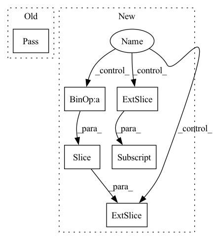

Pattern ID :10287
Before Change
if img is None:
if len(frames) > 0: img = frames[-1]
else: img = np.zeros((112, 112, 3), dtype=np.uint8)
if crop_augment: pass // TODO: implement random crop
if mirror_augment: img = cv2.flip(img, 1)
// TODO: add temporal augmentation (repeat, deletion)
frames.append(img)After Change
else: img = np.zeros((112, 112, 3), dtype=np.uint8)
if crop_augment:
img = cv2.resize(img, (128, 128))
if is_training :
crop_x = random.randint(0, 16)
crop_y = random.randint(0, 16)
img = img [crop_y : crop_y + 112, crop_x: crop_x + 112]
else:
img = img[8: 120, 8: 120]
if mirror_augment and is_training: img = cv2.flip(img, 1)
// TODO: add temporal augmentation (repeat, deletion)
frames.append(img)
seq = np.stack(frames).transpose(3, 0, 1, 2).astype(np.float32) // THWC->CTHWIn pattern: SUPERPATTERN
Frequency: 3
Non-data size: 6
Instances Fragment ID: 36226136
Project Name: sailordiary/m3f.pytorch
Commit Name: 639f60090b44d3fdb3b40ae0df467ffed523da9e
Time: 2020-02-01
Author: me@sailorzhang.com
File Name: models/dataset.py
M Class Name: AnonimousClass
N Class Name: AnonimousClass
M Method Name: load_video(7)
N Method Name: load_video(6)
M Parent Class:
N Parent Class:
M File Name: models/dataset.py
N File Name: models/dataset.py
M Start Line: 50
M End Line: 75
N Start Line: 47
N End Line: 70
Before Change
self.edge_weights = values
def _generate_task(self, num_timesteps_in: int=12, num_timesteps_out: int=2):
pass
def get_dataset(self, num_timesteps_in: int=12, num_timesteps_out: int=2):
pass
After Change
// Generate observations
features, target = [], []
for i, j in indices:
features.append((self .X[:, :, i : i + num_timesteps_in]).numpy())
target.append((self.X[:, 0, i + num_timesteps_in: j]) .numpy())
self.features = features
self.targets = target Fragment ID: 36226138
Project Name: benedekrozemberczki/pytorch_geometric_temporal
Commit Name: a63deca8f1682d1552eaf61b77c4de33550927c1
Time: 2021-03-02
Author: pms69@cam.ac.uk
File Name: torch_geometric_temporal/data/dataset/pems_bay.py
M Class Name: PemsBayDatasetLoader
N Class Name: PemsBayDatasetLoader
M Method Name: _generate_task(3)
N Method Name: _generate_task(3)
M Parent Class: object
N Parent Class: object
M File Name: torch_geometric_temporal/data/dataset/pems_bay.py
N File Name: torch_geometric_temporal/data/dataset/pems_bay.py
M Start Line: 48
M End Line: 48
N Start Line: 58
N End Line: 69
Before Change
num_timesteps_in (int): number of timesteps the sequence model sees
num_timesteps_out (int): number of timesteps the sequence model has to predict
pass
def get_dataset(self, num_timesteps_in: int=12, num_timesteps_out: int=12) -> StaticGraphDiscreteSignal:
Returns data iterator for METR-LA dataset as an instance of the
static graph discrete signal class.After Change
// Generate observations
features, target = [], []
for i, j in indices:
features.append(self .X[:, :, i : i + num_timesteps_input])
target.append(X[:, 0, i + num_timesteps_input: j] )
self.features = features
self.targets = target Fragment ID: 36226140
Project Name: benedekrozemberczki/pytorch_geometric_temporal
Commit Name: a0051b9ca521b1773f3b6bce8791bd9d0849bcf6
Time: 2021-02-21
Author: pms69@cam.ac.uk
File Name: torch_geometric_temporal/data/dataset/metr_la.py
M Class Name: METRLADatasetLoader
N Class Name: METRLADatasetLoader
M Method Name: _generate_task(3)
N Method Name: _generate_task(3)
M Parent Class: object
N Parent Class: object
M File Name: torch_geometric_temporal/data/dataset/metr_la.py
N File Name: torch_geometric_temporal/data/dataset/metr_la.py
M Start Line: 63
M End Line: 63
N Start Line: 63
N End Line: 74